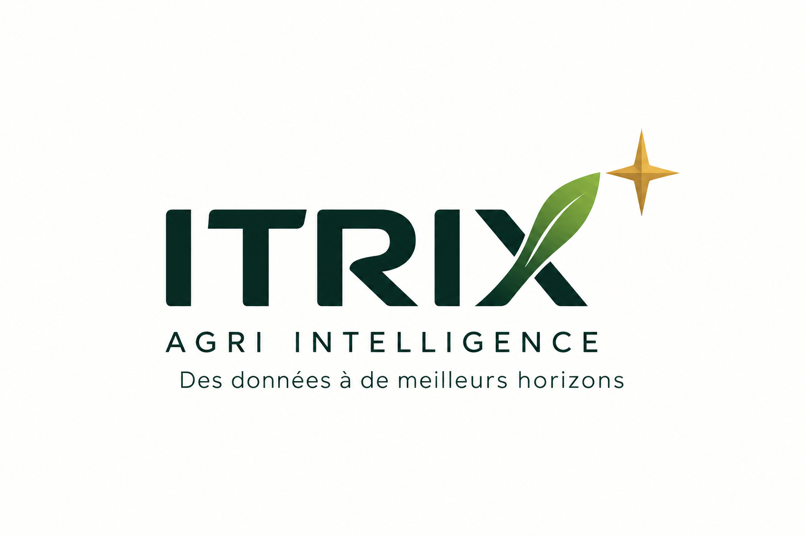

Fermes, serres et campagnes
Structurez l’exploitation, ses plantations, ses variétés et ses objectifs de production.

TECHNOLOGIESITRIX FARM PAR ITRIX TECHNOLOGIES
De la serre au coût de production, reliez les informations de votre exploitation pour décider avec des faits.
Une première spécialisation : la tomate sous serre au Maroc.
UNE EXPLOITATION, UNE VUE D’ENSEMBLE
Les données circulent entre les serres, les équipes, les stocks et la gestion. ItriX Farm les rassemble dans un parcours commun.
Le propriétaire suit ses indicateurs. Le chef d’exploitation retrouve ses priorités. Les équipes renseignent les opérations qui alimentent l’analyse.
Exploitation, ferme, serre ou variété : explorez le détail et revenez à la vue d’ensemble.
Suivez la récolte, ses envois, son tri et sa tarification avec les informations disponibles.
Distinguez le budget et le réel. Identifiez les données manquantes avant de conclure.
ITRIX FARM
Une solution de gestion agricole, construite autour des opérations et de leur impact économique.
Structurez l’exploitation, ses plantations, ses variétés et ses objectifs de production.
Renseignez les quantités, les effectifs, les envois station ou local, le tri et les prix.
Consultez les prescriptions, les échéances et les confirmations d’exécution selon les habilitations.
Suivez les bons d’achat, les réceptions, les mouvements et la valorisation des stocks.
Comparez les coûts par ferme, serre ou variété. Consultez les charges imputées et le coût par kilo.
Retrouvez la production, les priorités terrain et les indicateurs économiques dans des vues analytiques.
DEUX LECTURES, UNE MÊME EXPLOITATION
La vue Direction éclaire la performance. La vue Terrain donne accès aux serres et aux actions à suivre.
NOTRE APPROCHE
Le POC sert à observer les usages réels, fiabiliser les données et mesurer la valeur de la solution avant son élargissement.
Préparer les référentiels et reprendre les données existantes, notamment à partir de modèles Excel.
Accompagner les référents de l’exploitation dans les parcours de saisie et de consultation.
Observer la qualité des données, le temps de traitement et l’utilisation des indicateurs.
Valider les résultats du POC et définir le périmètre d’un déploiement payant.
Démarche POC envisagée sur 3 à 6 mois. Les gains et le ROI restent à démontrer sur des données réelles.
ITRIX TECHNOLOGIES
Une technologie qui part des réalités de l’exploitation agricole.
Des données mieux reliées pour rendre l’analyse accessible.
Une valeur évaluée avec les utilisateurs et leurs résultats.
PARLONS DE VOTRE EXPLOITATION
Préparez un brief pour cadrer le périmètre, les données à reprendre et les questions à explorer avec ItriX Technologies.